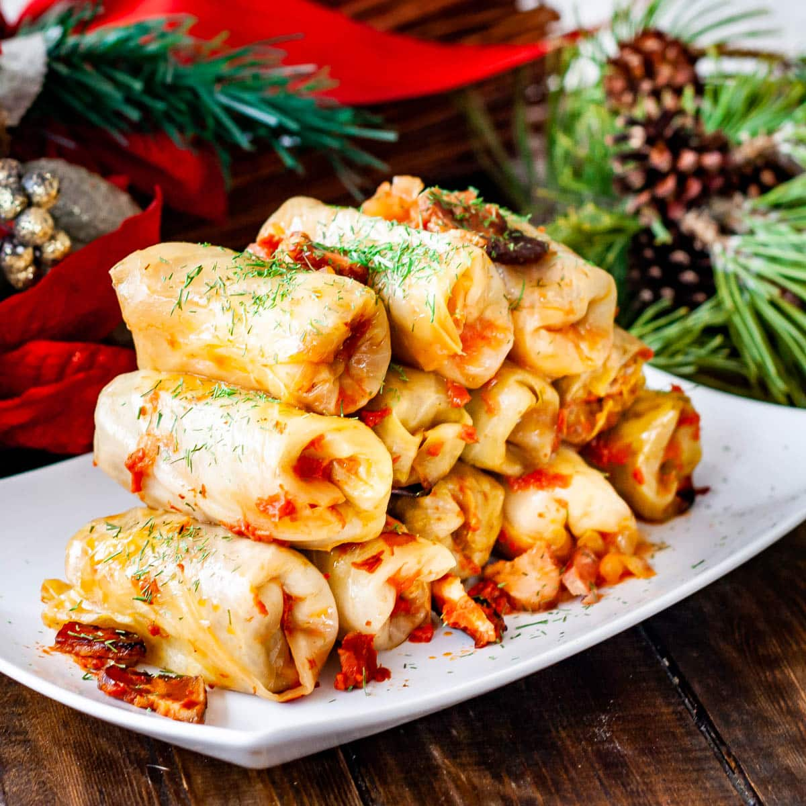
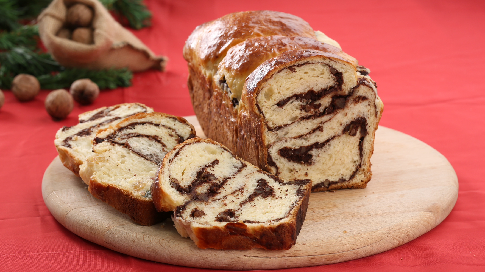

Sarmale
Sarmale is a traditional Romanian dish made of cabbage rolls stuffed with minced pork, rice, and spices.

Mămăligă
A hearty dish made from cornmeal, often served with cheese, sour cream, or meat.

Cozonac
A traditional Romanian dessert, similar to sweet bread, typically served during holidays.